Curso de Google Documentos › Insertar › Lección 18
Lección 18 de 53 · menú Insertar
Cómo hacer una tabla en Google Docs: insertar, sumar filas y borrar
Fecha del video: · Programado
¿Querés ordenar datos en tu Google Doc? Con Insertar → Tabla armás una tabla en segundos: elegís el tamaño, escribís, sumás filas, ajustás las Opciones de tabla y, si no la querés más, usás Eliminar tabla. Acá lo vemos paso a paso.
En el ejemplo usamos el documento «Lista de compras». Armamos una tabla de prueba y al final la eliminamos, así el documento quedó como estaba.
Paso 1: abrí Insertar → Tabla
Hacé clic en el renglón donde querés la tabla. Arriba, en la barra de menús, tocá Insertar y pasá el mouse por Tabla: se despliega una grilla de cuadraditos y, arriba, la fila Elementos de creación.
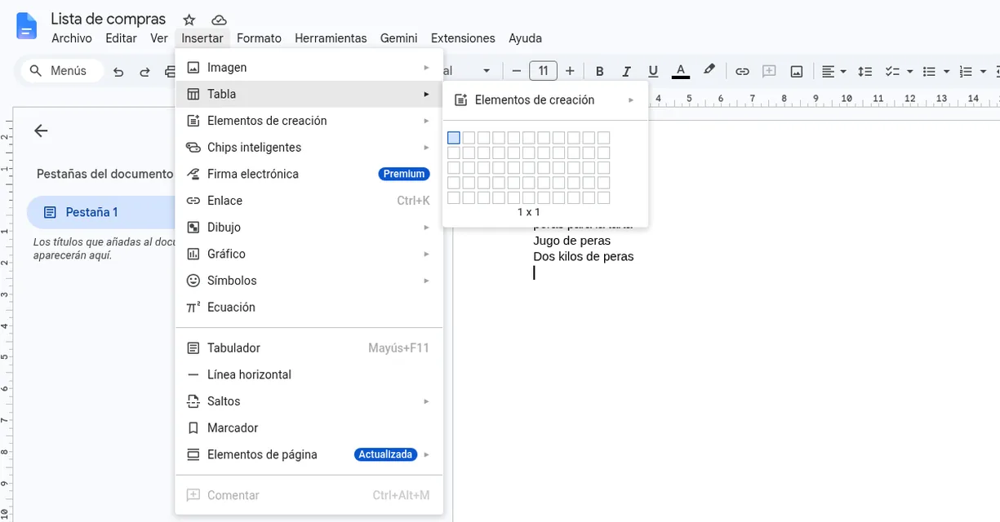
Paso 2: elegí el tamaño en la grilla
Mové el mouse sobre la grilla: el rótulo de abajo te dice el tamaño en columnas x filas. En el ejemplo marcamos 3 x 2 (3 columnas y 2 filas) y hicimos clic. Las tablas pueden tener hasta 20 x 20 celdas.
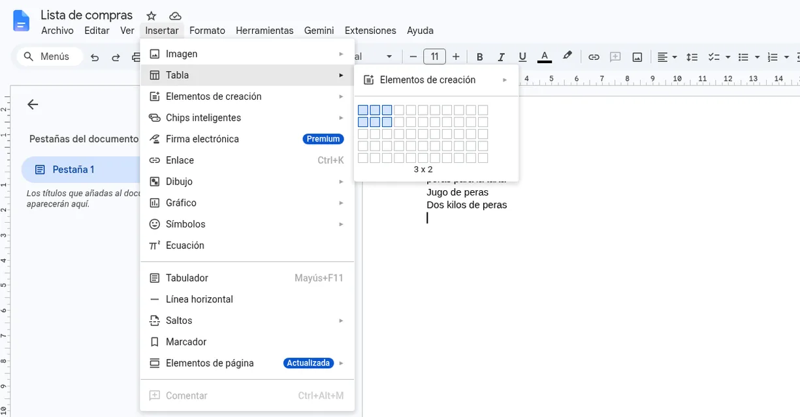
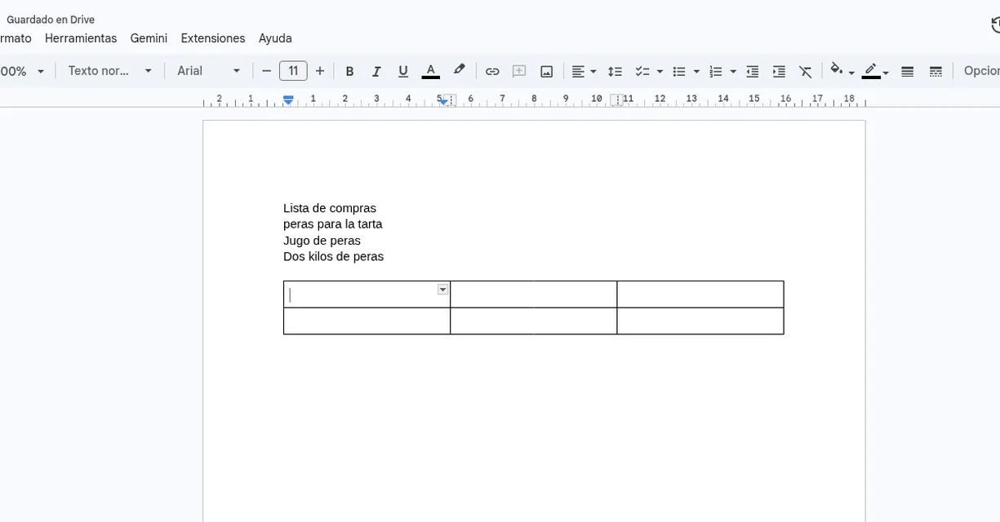
Paso 3: escribí y pasá de celda con Tab
Escribí en la primera celda y apretá Tab para pasar a la siguiente (Mayús + Tab vuelve a la anterior). En el ejemplo: Producto, Cantidad y Precio en la primera fila, y Peras, 2 kg y $ 3000 en la segunda.
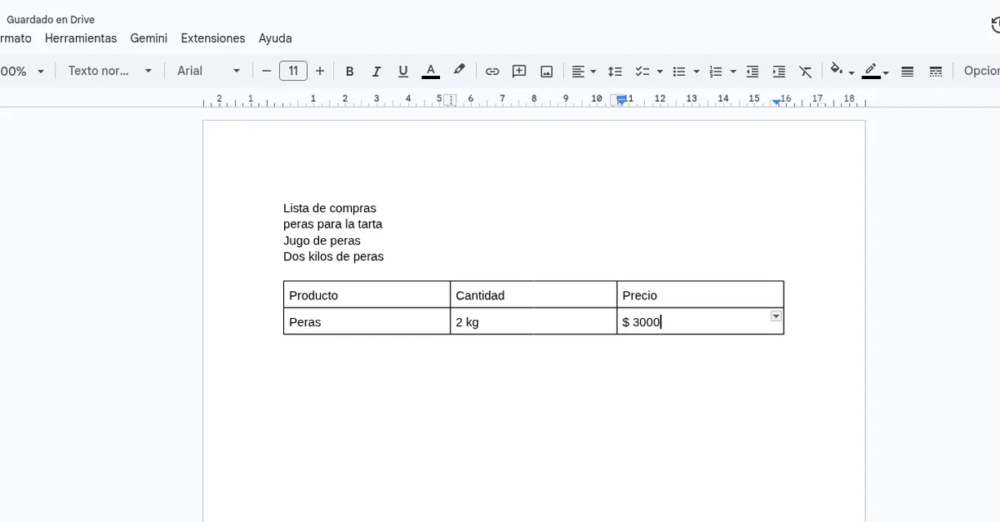
Paso 4: sumá filas o columnas con clic derecho
Hacé clic derecho en una celda: se abre el menú de la tabla. Ahí tenés Insertar 1 fila encima, Insertar 1 fila debajo, Insertar 1 columna a la izquierda e Insertar 1 columna a la derecha, que se agregan junto a la celda donde hiciste clic. En el ejemplo elegimos Insertar 1 fila debajo y la tabla pasó a tener 3 filas.
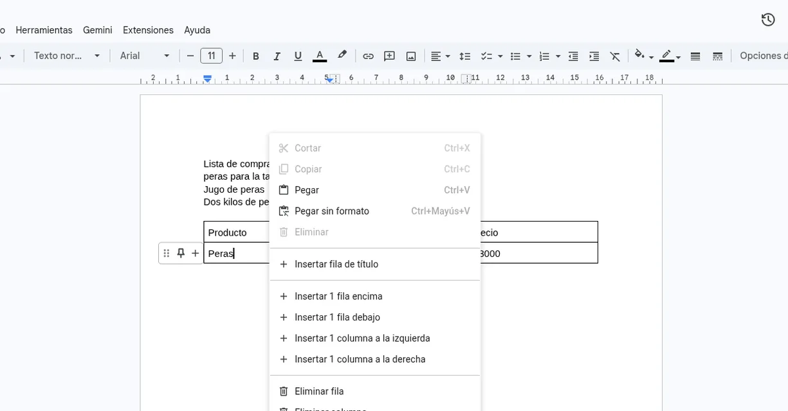
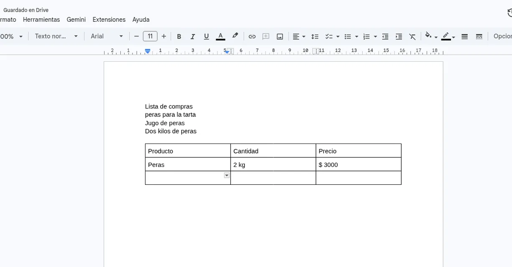
Paso 5: Opciones de tabla
En el mismo menú de clic derecho está Opciones de tabla (también aparece el botón Opciones de la tabla en la barra de herramientas cuando el cursor está en la tabla, y en Formato → Tabla → Opciones de tabla). Se abre un panel a la derecha con las secciones Diseños rápidos, Tabla, Columna, Fila, Celda y Color: ahí cambiás la alineación de la tabla, el ancho de las columnas y el alto de las filas, fijás filas de encabezado, la alineación vertical y el relleno de las celdas, y los colores. Para cerrarlo, tocá la X.
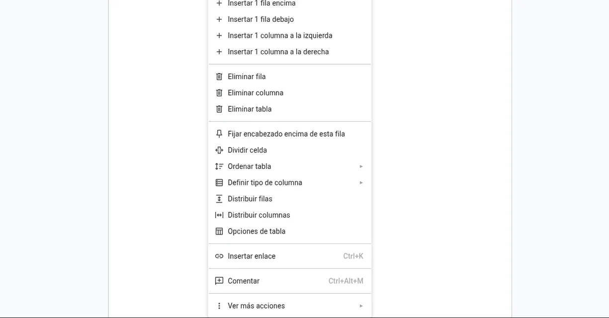
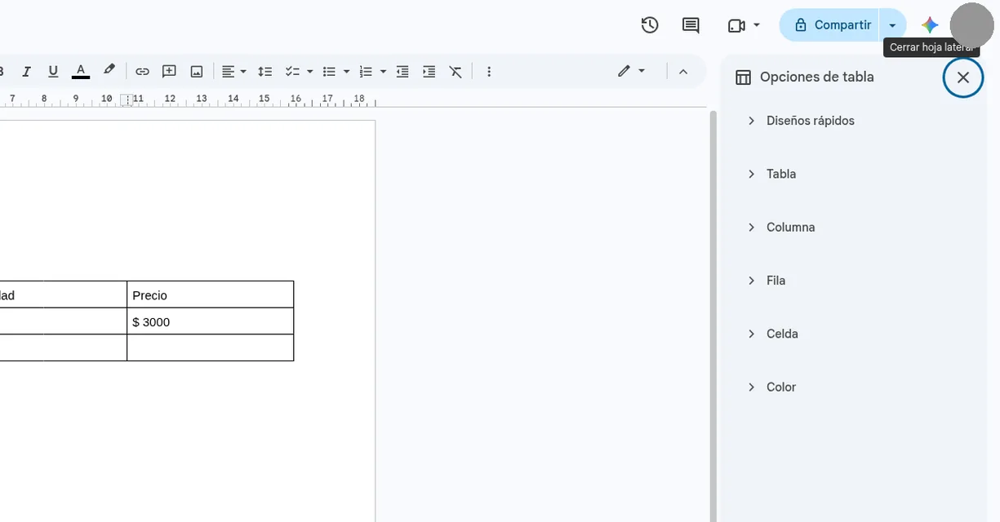
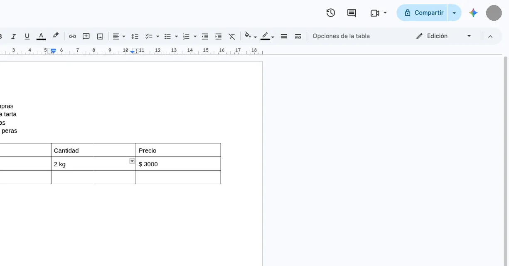
Tip: Distribuir filas y Distribuir columnas dejan todas las filas o columnas del mismo tamaño, y Ordenar tabla ordena las filas de forma ascendente o descendente.
Paso 6: eliminá la tabla
Clic derecho en una celda → Eliminar fila, Eliminar columna o Eliminar tabla. Con Eliminar tabla se va la tabla entera y el texto de arriba queda igual.
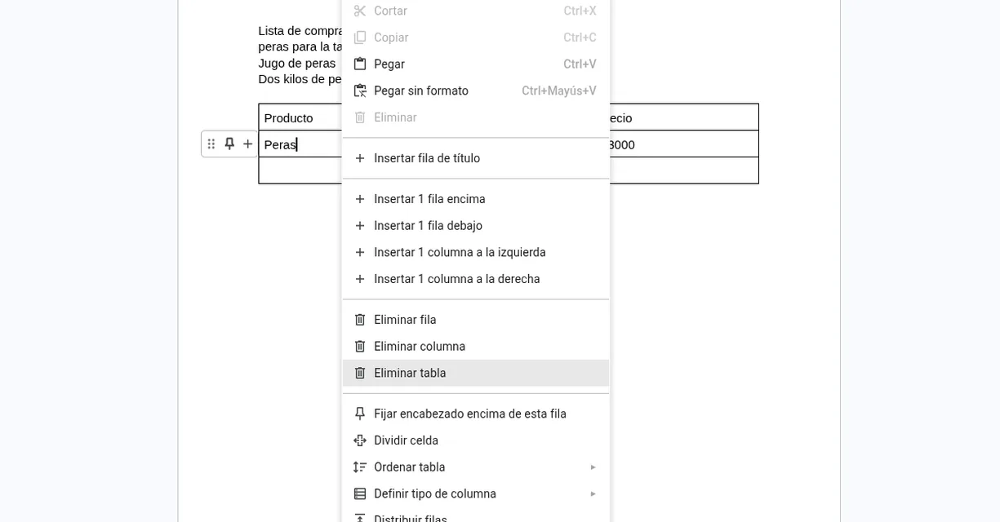
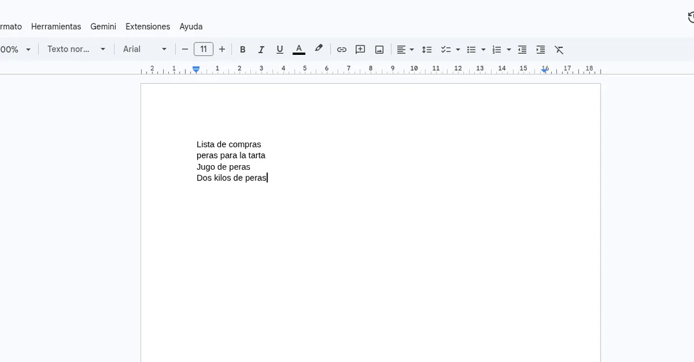
Paso 7: tablas ya armadas con Elementos de creación
Si querés una tabla con columnas ya pensadas, andá a Insertar → Tabla → Elementos de creación. Aparecen plantillas como Registro de decisiones sencillo, Seguimiento de revisiones, Seguimiento del lanzamiento de contenido, Planificación del producto y Recursos del proyecto; Ver más muestra todas. Se borran igual que cualquier tabla: clic derecho → Eliminar tabla.
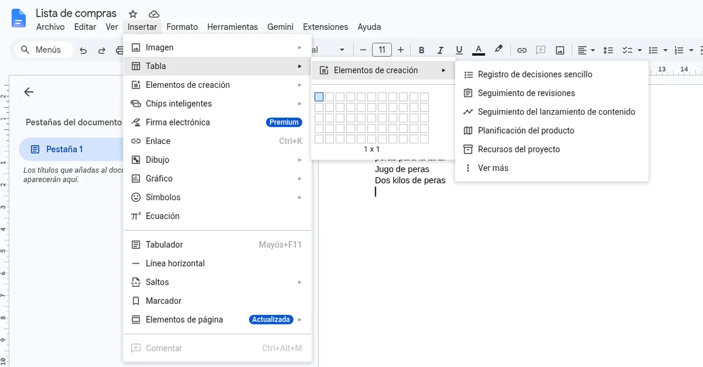
Fuentes oficiales: Agregar y editar tablas, Cómo insertar componentes básicos (Elementos de creación) en Documentos de Google y Uso de Documentos de Google con un lector de pantalla (Tab entre celdas). Mirá también el menú Insertar completo (video: Google Docs: menú Insertar paso a paso).
Mirá el Short
Estreno del Short: 30/11/2026 · 17:00 (hora Argentina)
Video relacionado: Google Docs: menú Insertar paso a paso (tutorial completo) — el video largo del menú Insertar (verlo en YouTube).
Fuente oficial: Ayuda de Editores de Documentos de Google. Capturas propias en un documento de ejemplo («Lista de compras»). El video usa voz generada con IA.